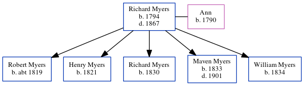

Robert Myers Grant 1912 - c1990
[ Home ] | [ Calendar ] | [ Surnames Index ] | [ Errors ] | [ Family History ]A police constable and the 3rd of 4 children of Christopher Grant (a ships boilermaker & plater) and Henrietta Myers, Robert Grant was born in Tynemouth, Tyne and Wear, England on 12 Sept 19121,2,3. He married Dorrie Allison in Durham, Durham, England around Nov 19404. On 29 Sept 1939, he was living at 17 Stott Street, Alnwick, Northumberland, England1.
He died c. Feb 1990 in North Tyneside, Northumberland, England3.
Parents
- Christopher James was born on 18 Sept 1883
- Henrietta Briscoe Nicholson was born on 15 Aug 1885
Citations
- 1939 Register - Findmypast (was recorded at this address)
- England & Wales births 1837-2006 - Findmypast
- England & Wales deaths 1837-2007 - Findmypast
- England & Wales Marriages 1837-2005 - Findmypast
Media
England & Wales births 1837-2006 - BMD/B/1912/4/AZ/000519/132
England & Wales deaths 1837-2007 - BMD/D/1990/3/77870132
1939 Register - TNA-R39-2954-2954C-004-08
England & Wales marriages 1837-2005 - BMD/M/1940/4/AZ/000607/106
Family Tree
Map
Generated by ged2site. Last updated on Jul 3, 2024
Known Issues
Can't find relationship with the home person
No records of living with anyone